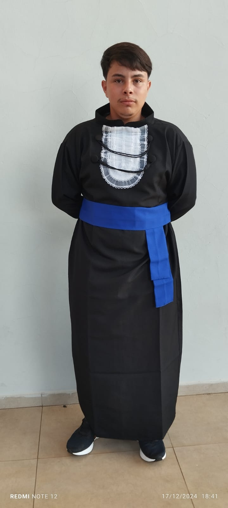
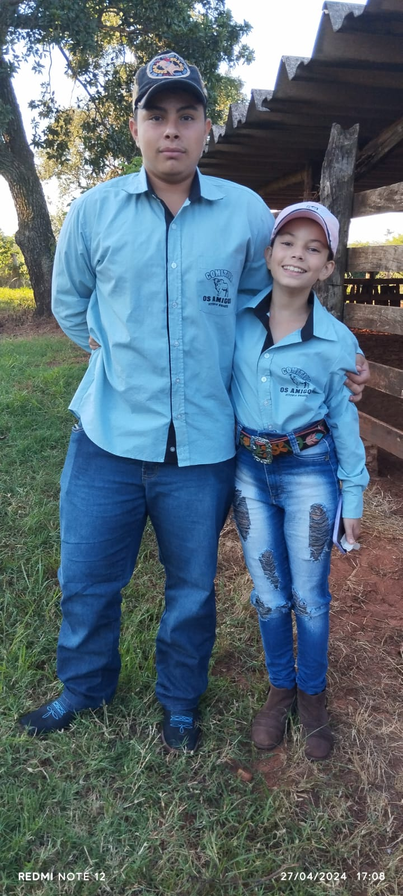
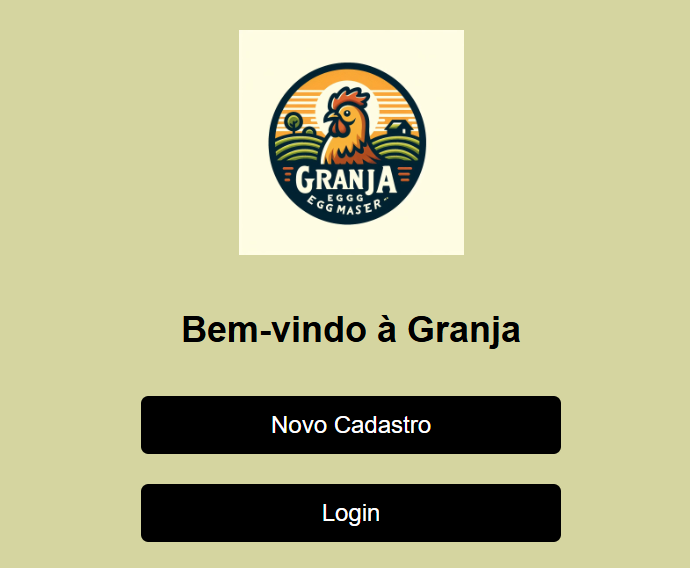
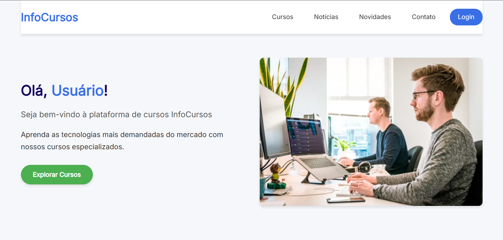

Performance
Experiências leves, responsivas e com navegação fluida.
Sou João Antônio Neves, desenvolvedor frontend e designer UX/UI. Crio interfaces que unem estratégia, clareza visual e performance para entregar produtos com impacto real.

Disponível para freelas
Jales, SP · Brasil
Minha forma de construir produtos digitais mistura visão estética, raciocínio técnico e atenção total à experiência de quem usa. Não gosto de sites "só bonitos": prefiro páginas que guiam, explicam, convertem e deixam uma impressão profissional.
Tenho interesse especial por interfaces modernas, animações sutis, arquitetura visual limpa e soluções que funcionam bem em qualquer tela. Meu objetivo é transformar cada projeto em uma vitrine forte da marca ou do negócio.

Experiências leves, responsivas e com navegação fluida.
Layouts claros, hierarquia visual forte e foco no usuário final.
Do conceito à entrega, com atenção aos detalhes do produto.
Selecionei projetos que demonstram organização visual, solução de problema e experiência digital consistente.

Plataforma para controle de produção de ovos com foco em praticidade, registro confiável e leitura rápida das informações.

Projeto voltado ao universo de tecnologia da informação, com estrutura visual pensada para facilitar descoberta de conteúdos e cursos.
Mapeio problema, público, contexto e resultado esperado antes de pensar na interface.
Organizo conteúdo, navegação e hierarquia visual para que tudo faça sentido rapidamente.
Transformo o conceito em uma interface elegante, responsiva e pronta para impressionar.
Combino base técnica com visão de produto para criar interfaces modernas e funcionais.
Posso ajudar com páginas institucionais, landing pages, interfaces de sistemas, redesign visual e melhorias de experiência em projetos que já existem.